1. Первый экран
Хорошая визуальная иерархия; заголовок слишком общий для аренды. Основная кнопка ведёт к форматам, а не к запросу даты.
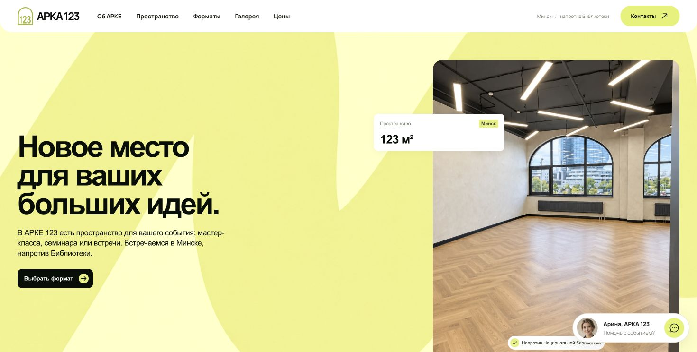
23 октября 2026. Общая оценка: 7/10. Сильная визуальная концепция; не хватает конкретики для аренды и работающего приёма заявок. Проверки lint и build пройдены.
Проверены Chrome 1470×745 и мобильное окно 390×844. Сайт не изменён. Это аудит текущей локальной версии.
Хорошая визуальная иерархия; заголовок слишком общий для аренды. Основная кнопка ведёт к форматам, а не к запросу даты.

Фирменный персонаж встроен в интерьер. Часть текста мелкая; тёмный большой заголовок на неоднородном фоне требует проверки контраста.
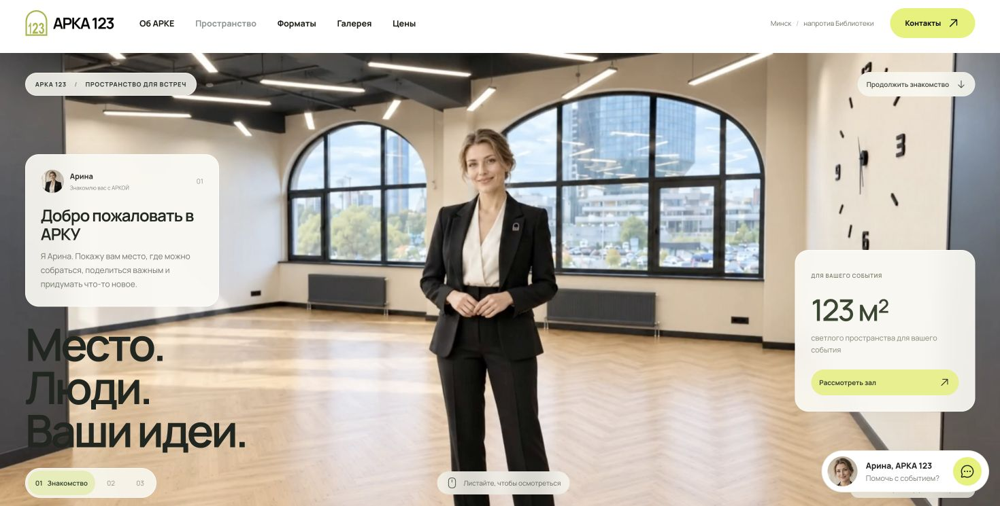
При прокрутке меняются ракурс и глава. Рассказ повторяет общие тезисы вместо новых фактов о зале. Полный круг 360° и геометрическая точность отдельно не измерялись.
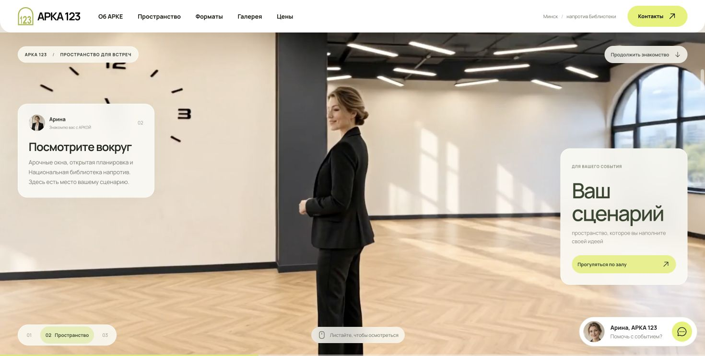
Street View загружается. Рейтинг демонстрационный с пометкой; текстовых отзывов из ТЗ нет.
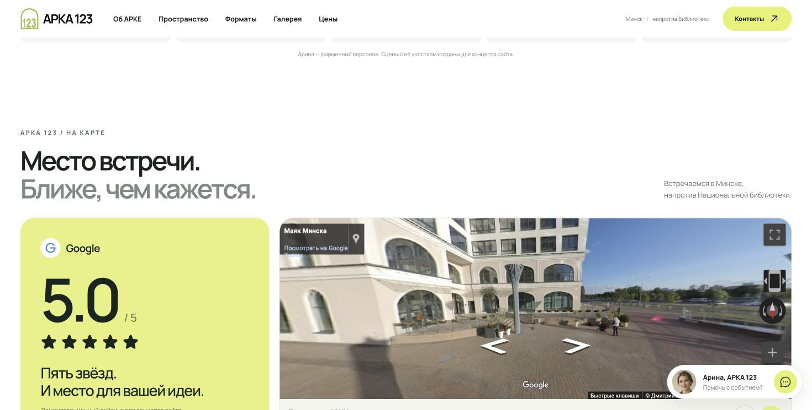
Пять согласованных карточек есть. На десктопе плавающий чат перекрывает область стрелок.
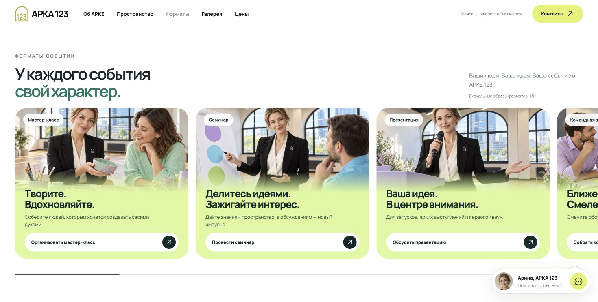
План уже есть и честно помечен как ИИ-схема. Он не заменяет обмерный план с колоннами, размерами, зонами и вариантами рассадки.
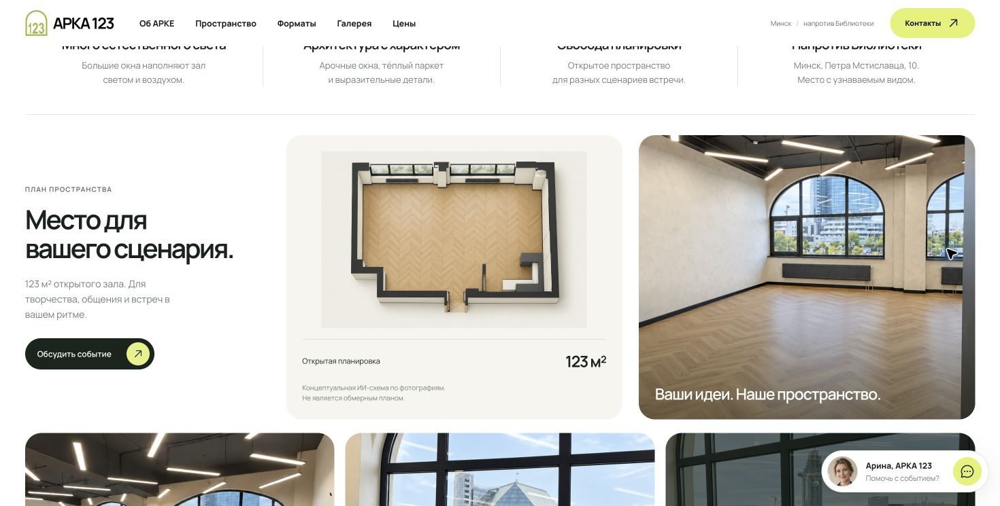
Три варианта разовой аренды с демонстрационными ценами. Нет конкретного состава аренды и дополнительных расходов. Минимум два часа указан.
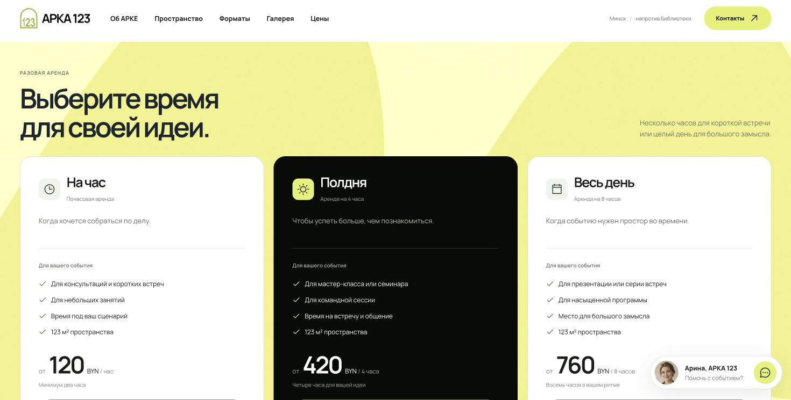
Форма явно сообщает, что отправка не подключена. Реального контактного телефона или электронной почты в футере нет.
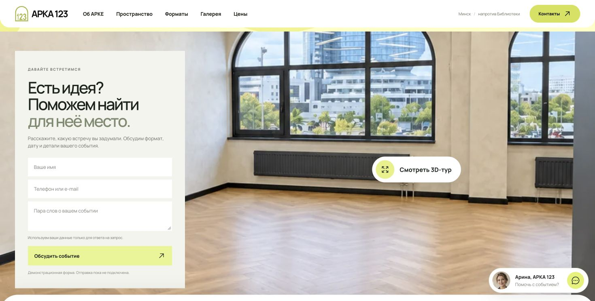
Панорама работает и имеет предупреждение об ИИ-реконструкции. Это обзор 360° из одной точки; название 3D-тур завышает ожидание свободного перемещения.
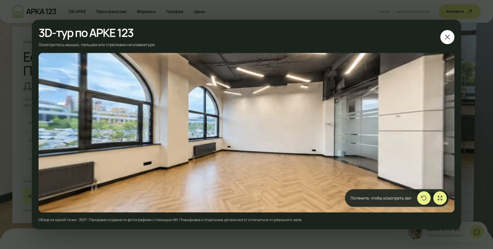
Открытие, переход к следующему фото и закрытие Escape проверены. В галерее шесть фотографий.
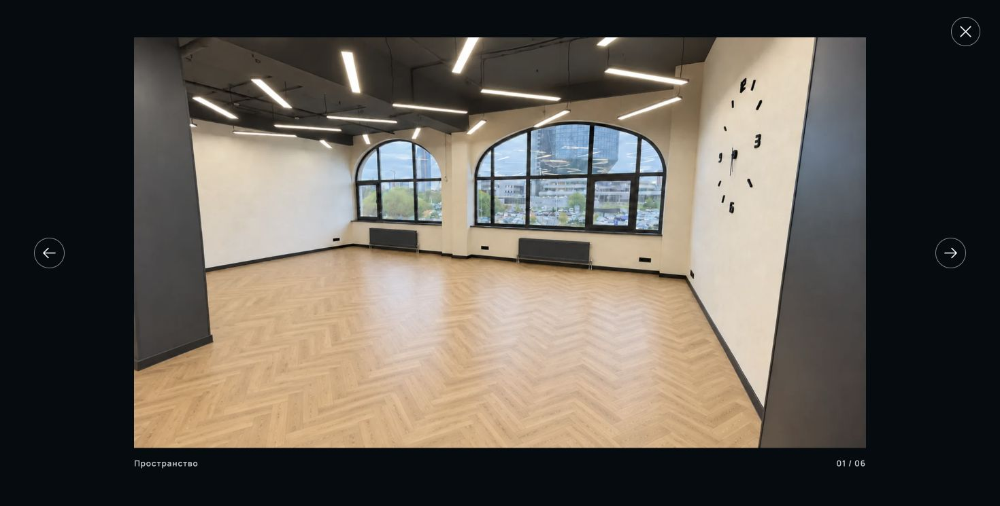
390×844: компоновка сохраняется; scrollWidth=innerWidth=390, переполнения нет. Мобильное меню открывается и ведёт к форматам.
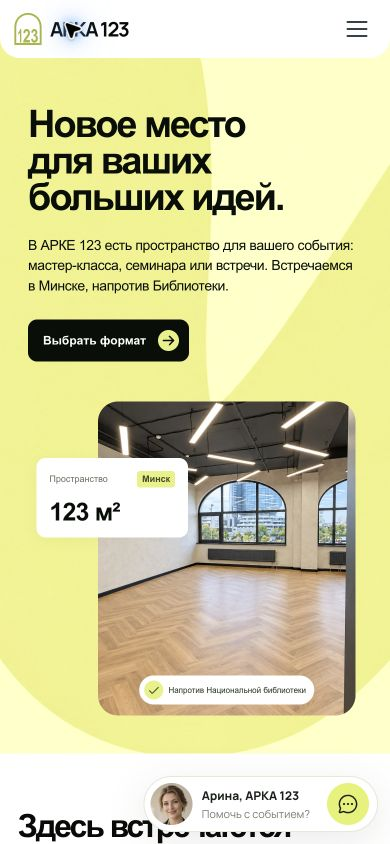
Переход кнопкой к следующему формату проверен. Чат занимает нижнюю область управления. Жест на физическом телефоне не проверялся.
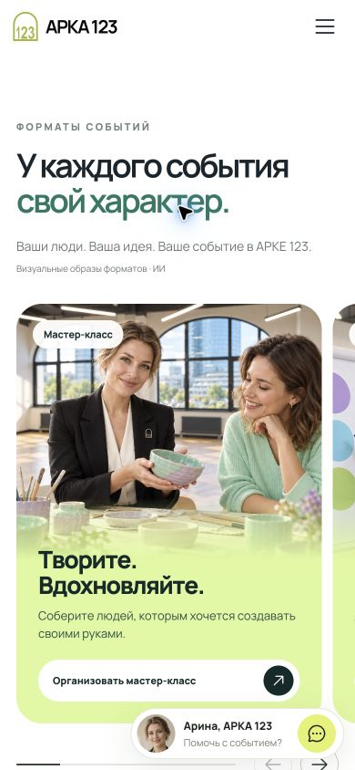
Чат частично перекрывает кнопку отправки и поясняющий текст. Отправка не подключена.
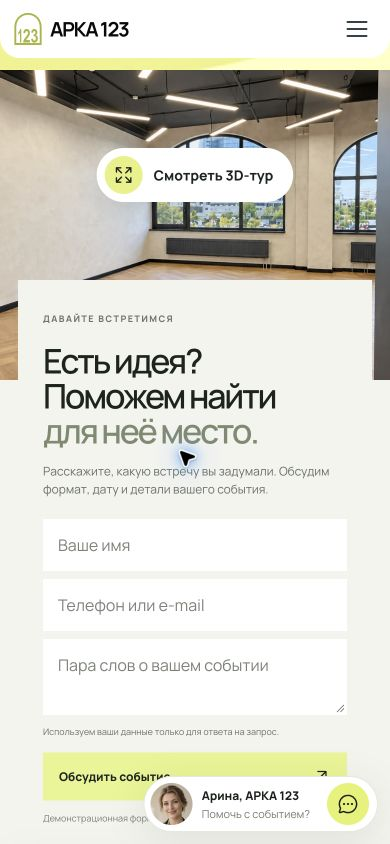
Ограничения: без измерения загрузки на медленной сети, полного аудита WCAG, реального устройства и проверки доставки заявки. Требования сверены с Google Docs; открыты четыре папки материалов и три Instagram-референса.